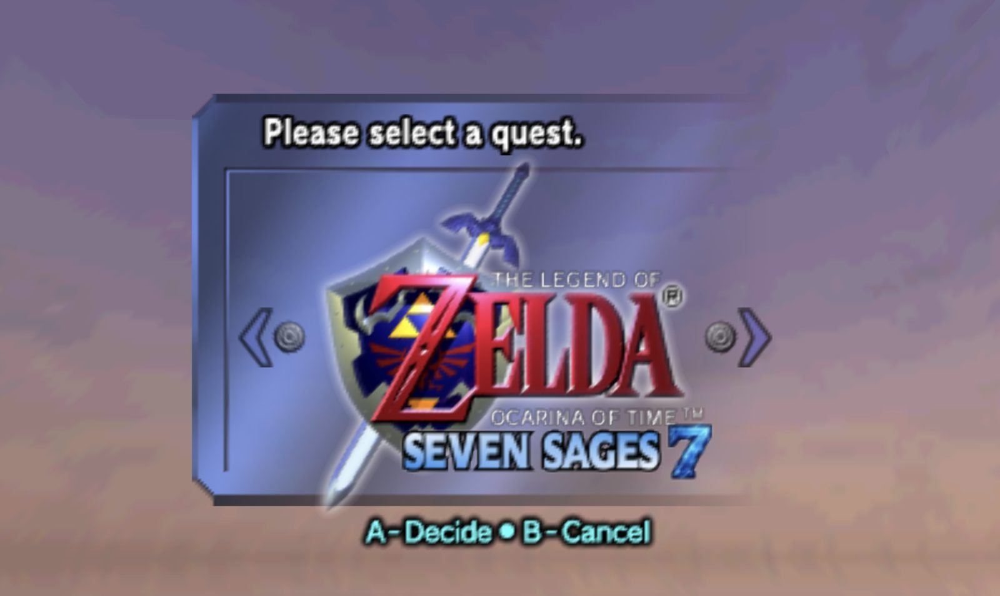
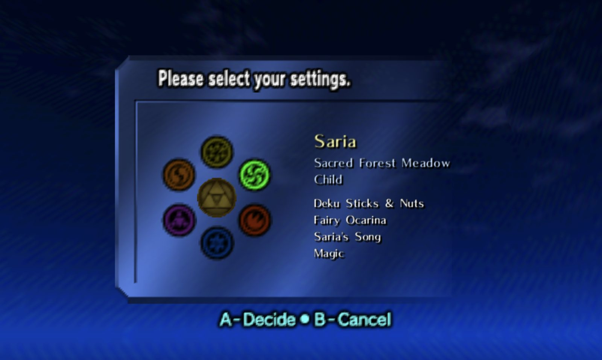
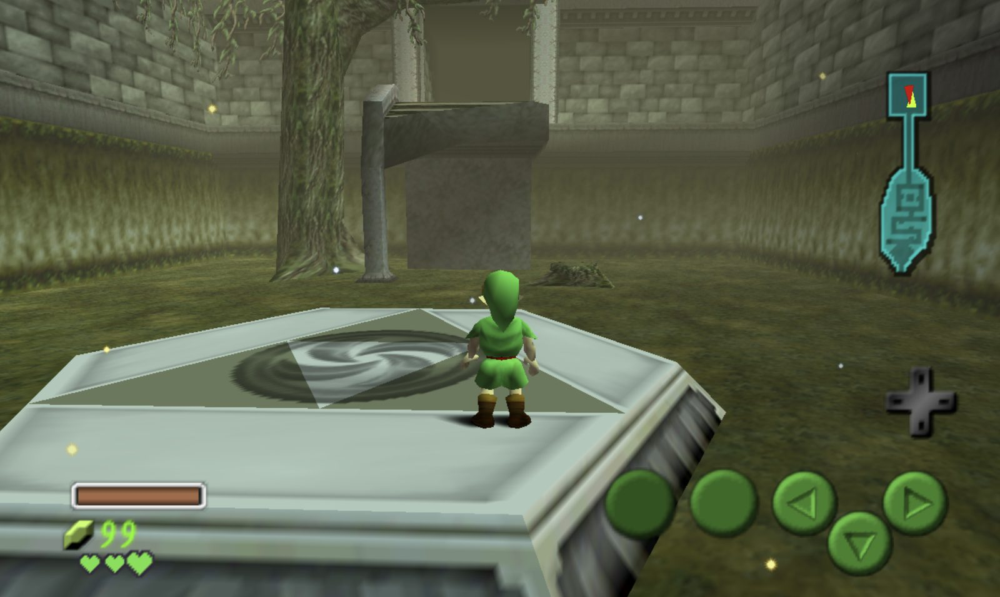

Segment a book into dialogue and narration, work out who is speaking each line, and give every speaker a voice of their own. The active sentence highlights as it plays. The analysis runs on the device with a small local model, tuned for e-ink Android hardware — no server and no account.
It plugs into the reader you already have
The first version is not a reader app. Quire installs as an Android text-to-speech engine, and the Boox’s own reader sends its Read Aloud through it. That was the cheapest experiment that could have killed the project, so it ran first, and it passed on an Onyx Boox Note Air5 C. A standalone reader is still planned, later.
Voices are made, not picked
The analysis writes down how each character should sound, and a separate step generates a voice to match, rather than handing out one of a few hundred stock speakers. Kept apart on purpose: the voices can get better without re-reading the book. Who said a line is worked out in tiers — a heuristic first, a small language model when the heuristic is unsure — and scored against labelled fixtures, so attribution quality is a number rather than an impression.
What exists
September brought the Android apps. app:companion imports a book, indexes it, casts its characters and picks up where it left off if it is interrupted. app:ttsservice is the speech engine itself: it synthesises whole sentences, serves the pieces the reader asks for from a rolling buffer, and can put several voices into one utterance. CI builds both. Underneath sit eight Kotlin modules in the root build, with the book index, the attributor, voice generation and casting among them.
One optional exception to “everything stays on the device”: bring your own key and dialogue can use cloud voices. Dialogue is about a quarter of a book’s words and most of its feeling. Only the line being spoken and the chosen voice go out; narration, the book and the cast stay local.
Personal · in development · last commit October 2026
Formic
A Kanban board where agents do the middle. A backlog idea goes in; agents write the spec, split it into tickets, write the code, see it through CI and merge it.
Splits the PRD into tickets, each with the directories it may touch.
Coder
Implements a ticket in a sandbox and opens the pull request.
Reviewer
Drives CI, fixes what fails, and merges when it is green.
PM
Writes the showcase once an epic is fully merged.
Each column’s agent is a template you choose — Anthropic, OpenAI, Gemini, DeepSeek and others on your own key, or Claude Code, Codex or Gemini CLI on a plan you already pay for, running in the repository’s own GitHub Actions. Every epic is mirrored as a GitHub issue, its tickets as sub-issues.
Two rules that keep it honest
File scope is the contract. Tickets that could run at the same time may not touch the same directories, the ticket graph is checked for that on the server, and a diff outside its scope cannot commit. A prompt asking nicely for isolation is not a boundary. Done means merged. A ticket is done only once the Reviewer approves and CI is green, one merge at a time.
A colony on top
Merged story points level up the colony, with a heat multiplier for merges in quick succession, ants that walk out to running work, and sound. Levels unlock Sentinels — Tester, QA, SecOps, Performance and others — that audit the repository and turn what they find into a backlog epic, and Queens: drop one on a card and its prerequisites are queued for it.
Already at work
Started on 21 September, 411 commits in its first twelve days. Formic adds its agent workflow to a repository with one pull request, and Navi and Orison carry it now; Formic also builds itself.
Personal · open beta · v2.1.0
Vapor Music
A local-first music player that analyses your own library on your own machine, and moves between tracks by tempo and key instead of shuffling.
Decodes audio and derives tempo, key, energy, loudness and cue points from it.
vapor-engine
Two decks, an EQ chain, six transitions and time-stretching — capped at ±6%, past which it refuses the mix rather than produce an artefact.
vapor-library
Playlists, the queue, and a Camelot-wheel pathfinder that routes between harmonically compatible tracks.
None of those three open a socket or a file. The Tauri shell owns the audio device, the WebDAV sync, the keychain and the filesystem, which is what keeps the analysis honest and testable.
It was a Godot app until August
The original build, and its C++ GDExtension wrapping Essentia and Rubber Band, was deleted on 21 August 2026 and preserved on the tag godot-final-v1.78 — eighty release notes' worth of history, kept rather than thrown away. The rewrite also moved the licence off AGPL; it is proprietary now, all rights reserved.
The DJ, steered
September’s work went into the listening. Vibe DJ now actually steers along its energy curve, deciding one track at a time, and it conducts whichever list you pressed play on. The library became one view, ranked by what actually gets played; artist pages show albums with their tracks rather than a table, and genre, artist and album all link through from the liner notes.
Open beta
Vapor Music is in open beta: anyone can download it from the GitHub releases page, and one tag builds macOS, Windows, Linux and Android. Sync still needs a WebDAV URL, which is a real barrier for a normal person; native Proton Drive, Mega, Google Drive and Dropbox backends are wanted and not built.
Personal · shipped · v0.2.2 · August 2026
Seven Sages
A story-driven randomizer mod for Ocarina of Time in which you play one of the seven sages instead of Link — and can play it with somebody else.
A fork of Ship of Harkinian, the Ocarina of Time PC port. The develop branch is upstream untouched; all of the work lives on mod/seven-sages, built by CI for Windows, macOS and Linux. GPL, because Ship of Harkinian is.

The mod takes a quest slot of its own at file select, sitting beside the vanilla ones.
Playing a sage
Each sage starts somewhere different, at a different age, with a different kit, picked from a ring on a dedicated quest slot at file select. That is enough to make a randomizer seed read as a different game rather than the same one reshuffled.

Choosing Saria: the Sacred Forest Meadow, as a child, with Deku sticks and nuts, the Fairy Ocarina, her own song and magic.

Where that choice puts you — on the meadow warp pad, with the Forest Temple ahead rather than Kokiri Forest behind.
SevenSages
About fifty files of item, song, mask and ability behaviour, plus the select menu and cosmetics.
SevenSagesCoop
Two players in one shared world, sharing world state, medallions, stones, songs and skulltula tokens while keeping personal inventories. The seed itself is transferred to teammates in 2KB chunks and reassembled by index.
SevenSagesTrade
A shared 24-slot stash behind a beggar in Lon Lon Ranch. Every transfer is exactly conservative, with four storage shapes handled separately so progressive upgrades decrement rather than zero out.
Released, and honest about it
Five releases through seven-sages-v0.2.2, builds attached. The release notes say plainly what has not been verified, including an open bug where two players withdrawing the same item at the same instant can both receive it.
A second mod rides along in the same build and is off by default: Enrich World, which adds scenery, a prop palette and an in-game placer.
Personal · shipped · v1.2.0 · July 2026
Lytra
A transparent, always-on-top desktop overlay showing time-synced lyrics for whatever is playing, whichever app is playing it.
A background thread asks the operating system for the active track once a second. GDScript cannot reach those APIs, so it shells out — get_media.ps1 against Windows media transport controls, get_media.swift on macOS — and calls back onto the main thread with title, artist, album, position and duration. Lyrics come from LRCLIB in LRC format and are parsed into a timeline, with a small mock database bundled so it can be worked on without a network.
The window
Borderless, transparent, always on top, with per-pixel transparency, dressed in glass and water-ripple shaders. About a thousand lines across the overlay controller and three autoloads — small on purpose.
Personal · in development · last commit September 2026
Mollusk
A voice and text agent that runs a living-room machine, so the computer is operated by talking to it rather than through a desktop and a file manager.
Ollama; a Python daemon holding the skills, the safety layer and the agent loop; and a browser frontend. Common phrases like “run X” or “play X” resolve against real indexes — Steam appmanifests, a scan of the media folder — and execute with no model call at all. Anything else falls through to an Ollama tool-calling loop, capped at five turns.
The safety layer
Each call is judged on its declared effects rather than its arguments, and comes back allow, confirm or deny. Reads are allowed. System changes confirm. Privilege escalation, formatting a disk, and writes to ~/.ssh, shell rc files or Mollusk’s own code are denied outright. Deletes move to a daemon-owned trash and stay recoverable, so the only thing you are ever asked to confirm is emptying it.
The README is unusually candid about the limit of this: the deny list is defence in depth, not a wall. A process the agent spawns can rewrite guardrail.py.
Mid-migration
The NixOS deployment files still boot the cage compositor, which has been retired — it hands all input to the topmost window, which makes the agent unreachable the moment a game is running. Voice is on the roadmap and not built yet.
Personal · in development · last commit September 2026
Navi
A desktop companion shaped like the fairy from Ocarina of Time. She follows the cursor, answers questions about what is on the screen, and has moods you have to look after.
“She should be somewhat capricious, so I need to look after her, like a virtual pet.” Her moods really do affect how helpful she is, and that is the point rather than a bug. The one line a mood may never cross is honesty: she can be terse, reluctant or unwilling, and never invent a fact or misreport your screen.
Rebuilt in September
Navi started in Godot. In September she was ported to Electron and TypeScript, with a small stateless Swift helper for the parts of macOS a web view cannot reach, and once the port did everything the original did, the Godot app was deleted. First launch walks you through choosing a model — Ollama on your own machine, or your own OpenAI key — and the macOS permissions, shown live. Voice runs through whisper and Piper, both off until you turn them on.
Knowing when to speak
She can read a Google Calendar and tell you when it is time to leave. Whether to say anything at all is its own decision, made in steps: an activity signal for what you are doing, an interruption gate for whether now is a bad time, and a judgement turn that answers silent or speak. When she does speak, it is in a bubble that never takes the keyboard or jumps over your work, and an outcome log records how each interruption went.
Hands, behind a gate
She can read and act on other apps through the macOS accessibility tree rather than guessing at pixel coordinates from a screenshot. The safety gate shipped before that ability did: deny by default, apps she may never touch, a limit on actions per turn, a kill switch, and an audit log she cannot edit.
The Triforce
A rule-based emotion system scores every interaction on Courage, Wisdom and Power, and keeps those with a Love Meter between sessions. The three scores tint the fairy, and a first-person inner-state block goes into every system prompt — so her colour and her manner are the same state, read two ways.
Personal · in development · last commit September 2026
Orison
Point it at a vault of Markdown notes and it compiles them into a text adventure, or a visual novel, that you can actually play.
It reads an Obsidian-style vault of environments, characters and stories, and turns it into typed game data and a knowledge graph. A session then runs against two local models with separate jobs: a world builder that narrates and returns structured JSON, and a character agent that writes dialogue and tracks how each character feels about you. A repair pass catches malformed model output rather than crashing on it.
Off Godot, onto Rust
Orison was paused from June. In September it came back with a migration plan: the Godot build, about 19,600 lines, went into feature freeze as the reference, and the engine moved to a Rust core with a Tauri 2 desktop app. A command-line build plays a whole campaign in a terminal. The desktop app has a Play screen with slash commands, a Map screen that draws the knowledge graph, a character screen showing rapport and emotion live, a Lamp and E-ink theme, and an accessibility pass for contrast, focus and keyboard use.
Next: the first five minutes
Today, reaching your first conversation means installing Ollama from another website, opening a terminal and pulling two models. For something whose whole pitch is “the model is yours and runs on your machine”, that reads like a developer tool. Packaging and a first run a stranger can get through are the next phase.
Personal · in development · last commit September 2026
Theory Forge
A browser tool for testing League of Legends builds. Stack items and levels on a champion and see the stats that come out.
Champion data comes from Meraki Analytics rather than Riot’s Data Dragon, because Data Dragon stopped publishing ability damage coefficients. Items and images still come from Data Dragon, so they stay accurate to the patch. Level scaling uses Riot’s own back-loaded growth formula — base + growth × n × (0.7025 + 0.0175n) — rather than a linear approximation.
The shop
Search, categories, drag-and-drop, and double-tap to add.
State of it
It runs, but there is no deployed build and no release, and apart from a README link fix on 2 September, nothing has changed since 1 June 2026. Almost all of it lives in one file: App.jsx is 69KB, and the README puts about 95% of the logic there. That is the first thing to fix if it comes off the shelf.